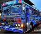
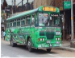
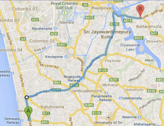

Easiest way to book buses in Sri Lanka
Use 12goAsia as the easiest way to book buses in Sri Lanka. Most routes, best options, great prices, guaurenteed seats
The bus route system in Sri Lanka is designed to provide efficient and affordable transporation across the island. With a comprehensive network covering major cities and rural areas, the system ensures that passengers can reach their destinationss comfortably and on time.
| Time | From | to | Visit | Price per person | Book | |
|---|---|---|---|---|---|---|
| 08:00 AM- 11:00 AM |
Matara | Colombo |  |
Places to visit
A. Galle Dutch Fort B. Mirissa C. Gangaramaya Temple |
Rs.200 | |
| 09:00 AM- 12:00 AM |
Jaffna | Colombo |  |
D. Anuradhapura
E. Polonnaruwa F. Sigiriya |
Rs.450 |
The buses feel fast. Although that's just a sense you get. Because none of the gauges seem to actually work. Mind you anything feels fast when you'are hurtling towards stationary traffic, or you're on the wrong side of the road overtaking another bus and there's minor-image situation coming towards you at similar gauge-less speeds.
Use 12goAsia as the easiest way to book buses in Sri Lanka. Most routes, best options, great prices, guaurenteed seats
Colombo to Kandy
The Journey from Colombo to Kandy offers scenic landscapes and lush greenery, connecting the commercial capital with the cultural heart of Sri Lanka. Kandy is renowned for its rich histroy and the Temple of the Sacred Tooth Relic.
Colombo to Galle
Travelling from Colombo to Galle along the southwestern coast provides stunning ocean views and stop at beautiful beaches. Galle is famous for its well-presevered Dutch colonial architecture and historic fort.
Colombo to Jaffna
The Colombo to Jaffna route showcases Sri Lanka's geographical diversity, from urban to Colombo to the rural north. Jaffna is known for its rich Tamil culture, historic sites, and delicious seasfood cuisine.